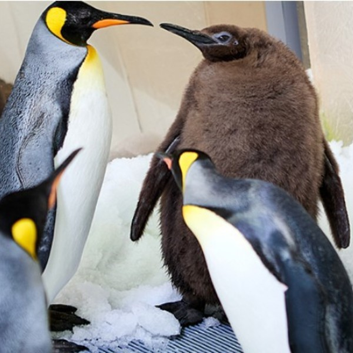
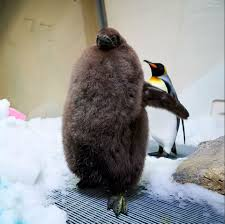

Acuario "Sea Life Melbourne"
El Acuario "Melbourne" es uno de los destinos más populares de Australia. Inaugurado en el año 2000, alberga una impresionante variedad de especies marinas, incluyendo tiburones, rayas, pingüinos y una colección diversa de peces tropicales.
El acuario se distingue por su arquitectura moderna y sus áreas temáticas, como la "Laguna de Rayas" y el "Mundo Antártico", donde los visitantes pueden conocer más sobre el hábitat natural de estos animales. También ofrece exhibiciones interactivas y programas de conservación marina.
Pesto, el pingüino
El pingüino Pesto se convirtió en una verdadera sensación, tanto por su tamaño descomunal como por su carisma en las redes sociales. Con apenas nueve meses de vida, este pingüino rey alcanzó un peso sorprendente de 21 kg y se convirtió en el polluelo más grande jamás visto en el Acuario Sea Life Melbourne.
El origen y crianza de Pesto
El crecimiento inusitado del no tan pequeño pingüino dejó perplejos a sus cuidadores, quienes atribuyen su imponente tamaño a una herencia genética excepcional. Su padre, Blake, es el pingüino más grande y longevo del acuario, y su madre, Hudson, junto con su otro "padre", Tango, lo cuidaron atentamente. Pesto se volvió viral en redes sociales como TikTok e Instagram, capturando la atención de millones de personas en todo el mundo.
Imágenes de Pesto

